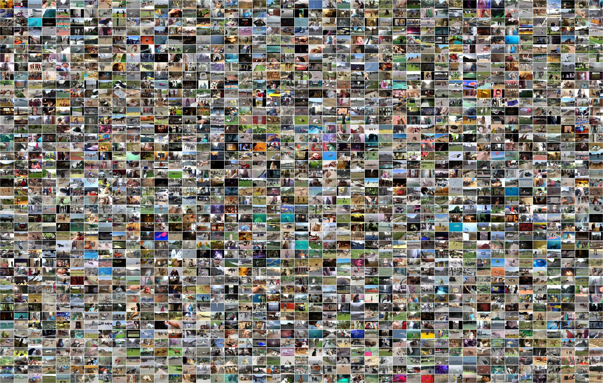
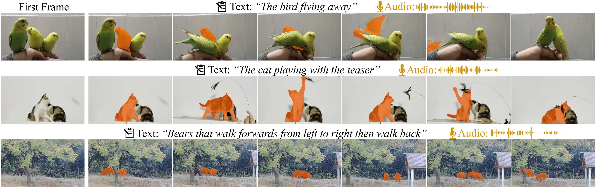

Introduction
MeViS v2 is a large-scale multi-modal dataset for referring motion expression video segmentation, focusing on segmenting and tracking target objects in videos based on language description of objects’ motions. Existing referring video segmentation datasets often focus on salient objects and use language expressions rich in static attributes, potentially allowing the target object to be identified in a single frame. Such datasets underemphasize the role of motion in both videos and languages. To explore the feasibility of using motion expressions and motion reasoning clues for pixel-level video understanding, we introduce the MeViS dataset.

Figure: Examples from Motion expressions Video Segmentation (MeViS) showing the dataset's nature and complexity. The selected target objects are masked in orange.


{kind=link}
{kind=link}
Statistics
Human-annotated motion Expressions, each with both text and audio
Videos of dense scenarios
Objects with complex motion
High-quality Mask annotations
Tasks
We benchmark 15 existing methods across 4 tasks supported by MeViS, including 6 referring video object segmentation (RVOS) methods, 3 audio-guided video object segmentation (AVOS) methods, 2 referring multi-object tracking (RMOT) methods, and 4 video captioning methods for the newly introduced referring motion expression generation (RMEG) task. The results demonstrate weaknesses and limitations of existing methods in addressing motion expression-guided video understanding.
Dataset
Dataset Download
The dataset is available for non-commercial research purpose only. Please follow the following links to download.
Dataset Split
- 2,006 videos & 33,072 sentences in total;
- Train set: 1662 videos & 27,502 sentences, used for training;
- Valu set: 50 videos & 907 sentences, ground-truth provided, used for offline self-evaluation (e.g., ablation study) during training;
- Val set: 140 videos & 2,523 sentences, ground-truth not provided, used for Codabench online evaluation;
- Test set: Will be progressively and selectively released and used for evaluation during the competition periods (PVUW, LSVOS);
Evaluation
Please submit your results of Val set here:
We strongly encourage you to evaluate with the MeViS v2 dataset. MeViS v1 is for legacy support only and may be deprecated in the future.
It is suggested to first evaluate your model locally using the Valu set before submitting your results of the Val to the online evaluation system.
Data Structure
The dataset follows a similar structure as Refer-YouTube-VOS. Each split of the dataset consists of three parts: JPEGImages, which holds the frame images, meta_expressions.json, which provides referring expressions and metadata of videos, and mask_dict.json, which contains the ground-truth masks of objects. Ground-truth segmentation masks are saved in the format of COCO RLE, and expressions are organized similarly like Refer-Youtube-VOS.
Please note that while annotations for all frames in the Train set and the Valu set are provided, the Val set only provide frame images and referring expressions for inference.
mevis
├── train // Split Train
│ ├── JPEGImages
│ │ ├── <video #1 >
│ │ ├── <video #2 >
│ │ └── <video #...>
│ │
│ ├── mask_dict.json
│ └── meta_expressions.json
│
├── valid_u // Split Val^u
│ ├── JPEGImages
│ │ └── <video ...>
│ │
│ ├── mask_dict.json
│ └── meta_expressions.json
│
└── valid // Split Val
├── JPEGImages
│ └── <video ...>
│
└── meta_expressions.json
People
Henghui Ding
Fudan UniversityChang Liu
SUFEShuting He
SUFEKaining Ying
Fudan UniversityXudong Jiang
NTUChen Change Loy
NTUYu-Gang Jiang
Fudan UniversityCitation
Please consider to cite MeViS if it helps your research.
@article{MeViSv2,
title={MeViS: A Multi-Modal Dataset for Referring Motion Expression Video Segmentation},
author={Ding, Henghui and Liu, Chang and He, Shuting and Ying, Kaining and Jiang, Xudong and Loy, Chen Change and Jiang, Yu-Gang},
journal={IEEE Transactions on Pattern Analysis and Machine Intelligence},
year={2025},
publisher={IEEE}
}
@inproceedings{MeViS,
title={{MeViS}: A Large-scale Benchmark for Video Segmentation with Motion Expressions},
author={Ding, Henghui and Liu, Chang and He, Shuting and Jiang, Xudong and Loy, Chen Change},
booktitle={ICCV},
year={2023}
}
@inproceedings{GRES,
title={{GRES}: Generalized Referring Expression Segmentation},
author={Liu, Chang and Ding, Henghui and Jiang, Xudong},
booktitle={CVPR},
year={2023}
}
@article{VLT,
title={{VLT}: Vision-language transformer and query generation for referring segmentation},
author={Ding, Henghui and Liu, Chang and Wang, Suchen and Jiang, Xudong},
journal={IEEE Transactions on Pattern Analysis and Machine Intelligence},
year={2023},
publisher={IEEE}
}A majority of videos in MeViS are from MOSE: Complex Video Object Segmentation Dataset
@article{MOSEv2,
title={{MOSEv2}: A More Challenging Dataset for Video Object Segmentation in Complex Scenes},
author={Ding, Henghui and Ying, Kaining and Liu, Chang and He, Shuting and Jiang, Xudong and Jiang, Yu-Gang and Torr, Philip HS and Bai, Song},
journal={arXiv preprint arXiv:2508.05630},
year={2025}
}
@inproceedings{MOSE,
title={{MOSE}: A New Dataset for Video Object Segmentation in Complex Scenes},
author={Ding, Henghui and Liu, Chang and He, Shuting and Jiang, Xudong and Torr, Philip HS and Bai, Song},
booktitle={ICCV},
year={2023}
}